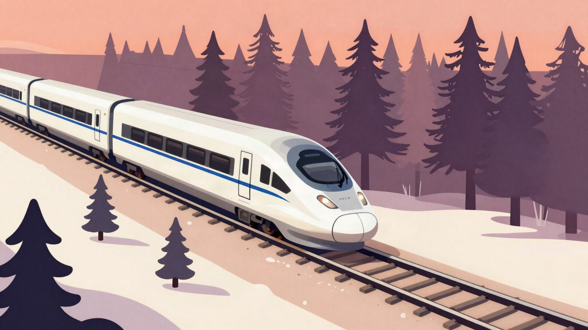

Ruski vlak velike brzine: prva serija okretnih postolja prošla ispitivanje čvrstoće

U tvornici Uralske lokomotive ispitana je prva serija motornih i nemotornih okretnih postolja za rusku prugu velike brzine, a Ministarstvo prometa tvrdi da su izdržala ispitivanje čvrstoće. Uz njih je testiran vučni reduktor uz opterećenja koja odgovaraju brzinama do 400 km/h. Vlak bi na ispitivanja trebao krenuti 2027.
Prva serija okretnih postolja za rusku prugu velike brzine ispitana je u tvornici Uralske lokomotive. Ispitana su i motorna i nemotorna postolja, a prema podacima Ministarstva prometa Rusije izdržala su ispitivanje čvrstoće.
Okretno postolje je dio podvozja o kojem ovise sigurnost vožnje, njezina ravnomjernost i stabilnost vlaka na tračnicama. Osmovagonski sastav imat će ukupno 16 postolja, po dva ispod svakog vagona.
Reduktor testiran u kiši i prašini
Zajedno s postoljima ispitan je i domaći vučni reduktor za motorno postolje. Testiran je u uvjetima kiše i prašine, uz opterećenja koja odgovaraju brzinama do 400 km/h.
Što slijedi
Sljedeći korak je ugradnja postolja ispod vagona vlaka koji bi na ispitivanja trebao krenuti 2027.
Vlak je namijenjen prvoj ruskoj pruzi velike brzine između Moskve i Sankt Peterburga, koja se gradi u okviru nacionalnog projekta „Učinkovit prometni sustav".
Izvor: Сделано у нас
Povezani članci
- BYD Yangwang Altior: luksuzni sedan s četiri sjedala, megavatnim punjenjem i dosegom preko 1.000 km8. studenoga 2026.
 Demihovski strojogradski zavod sastavio je prvi ruski vlak na vodikove gorivne ćelije27. studenoga 2026.
Demihovski strojogradski zavod sastavio je prvi ruski vlak na vodikove gorivne ćelije27. studenoga 2026. JR East uvodi ulaz u vlak bez tapkanja: vrata s UWB tehnologijom na 40 postaja u Tokiju od 2028. godine26. studenoga 2026.
JR East uvodi ulaz u vlak bez tapkanja: vrata s UWB tehnologijom na 40 postaja u Tokiju od 2028. godine26. studenoga 2026.